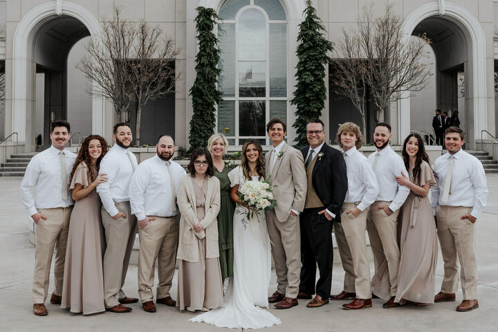
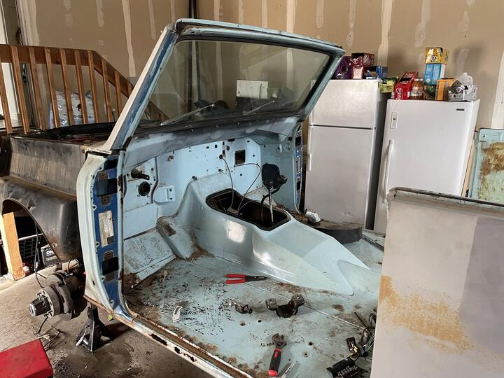
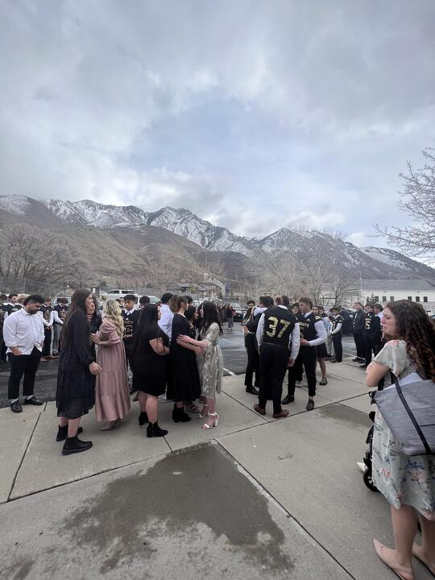

Polarity of Grief
Chapters
Every moment
Reading with the book
← All chapters
Part Three · After
The Night I Stayed Awake

The last family picture
1 photograph

The Scout
5 photographs
The music at the funeral
2 films
Peace in Christ
2 films

The haka in the parking lot
1 film · 2 photographs